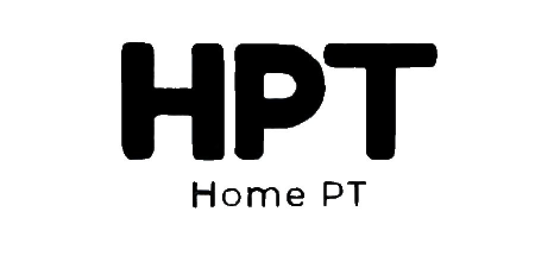

오늘도 득근하세요. 별빛님




나의 체지방률(BMI)측정
키 : cm
몸무게 : kg
당신의 체질량지수는 입니다.
체질량지수는 자신의 몸무게(kg)를 키의 제곱(m)으로 나눈 값입니다.
체질량지수는 근육량, 유전적 원인, 다른 개인적 차이를 반영하지 못하는 단점이 있음에도 불구하고
조사자들이나 의료인들이 가장 많이 쓰는 방법 중 하나입니다.
● 올바른 식생활 지침
제때에
신체리듬에 맞춰 규칙적으로 식사하는 것은 아주 중요합니다. 특히 아침을 거르지 맙시다.
골고루
다양한 식품을 선택해 부족한 영양소가 없도록 해야 합니다.
알맞게
표준 체중을 유지하기 위해 하루에 필요한 적정열량을 섭취하는 것은 비만과 성인병을 예방하는 기본 노력입니다.
싱겁게
소금의 과잉 섭취는 고혈압을 비롯한 순환기계질환의 중요 요인이 됩니다. 건강을 위해 소금 섭취를 하루에
5g이하로 줄입시다.
즐겁게
식사는 가능한 여럿이 함께 하는 것이 좋습니다. 가족끼리 즐겁게 하는 식사는 그 자체가 즐거움이고,
성인병 관리입니다.